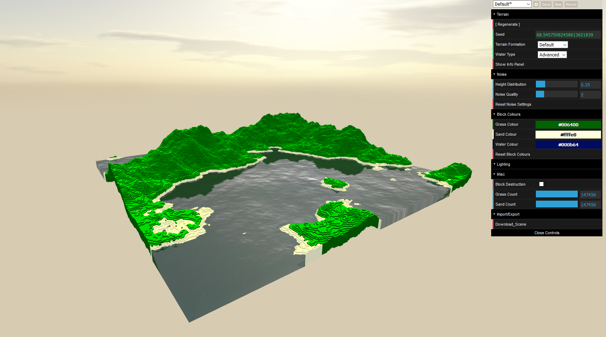

Generative Terrain

Project Description
Procedural terrain generator using multiple noise maps (Improved Perlin Noise), and a WebGL water shader.
A variety of options can be customized, including: terrain formation types (island, mountain, etc), noise distribution/height multiplier, and block colours.
Seeds are deterministic and can be saved and reused.
Full scenes can be downloaded as gbl files, and are divided into block types (grass/sand/water) for easy material modifying in 3D software.
Technical Info
- Javascript
- Three.js
Contact me at tombenyunes@gmail.com
See more at https://github.com/tombenyunes
See more at https://github.com/tombenyunes